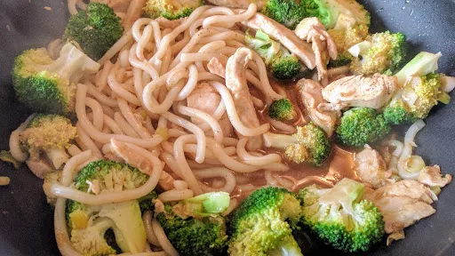

Chicken & broccoli noodles
20 mins
Serves 4

Ingredients
- 250 g packet egg noodles
- 350 g broccoli florets
- 2 tbsp olive oil
- 2½ cm piece ginger, grated
- 4 cloves garlic, finely sliced
- 2 boneless skinless chicken breasts, cut into thin strips
- 1 bunch spring onions, trimmed and cut in half horizontally
- 3 tbsp light soy sauce
- 200 ml chicken stock
Instructions
- Cook the
noodles250 g packet
in a pan of salted water for 5 minutes, adding the broccoli350 g
for the last 2 minutes. Drain and set aside.
- Meanwhile, heat a wok until very hot. Add the oil, then stir in the
ginger2½ cm piece
and garlic4 cloves
. Cook for 30 seconds, stirring. Add the chicken2
strips and cook for 5 minutes, stirring often, until tinged brown. Add the spring onions1 bunch
and stir briefly to heat through.
- Mix the
soy sauce3 tbsp
and stock200 ml
together, and stir into the wok. Add the drained noodles250 g packet
and broccoli350 g
, season with black pepper and toss everything together. Serve immediately.
-
kcal
424
-
fat
12 g
-
saturates
2 g
-
carbs
49 g
-
sugar
4 g
-
fibre
6 g
-
protein
30 g
-
salt
2.61 g
BBC Good Food: Low-fat Feasts
Short Link
Long Link